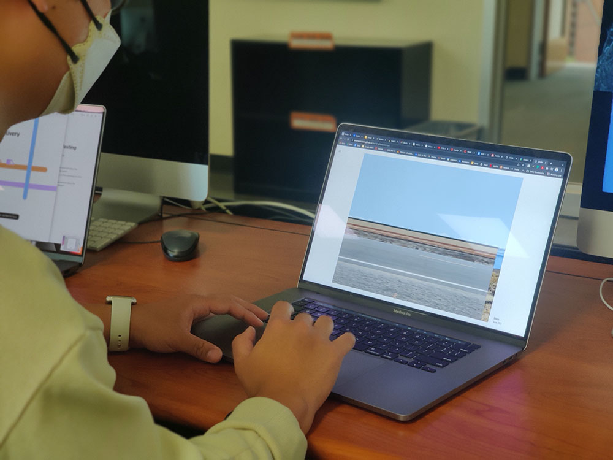
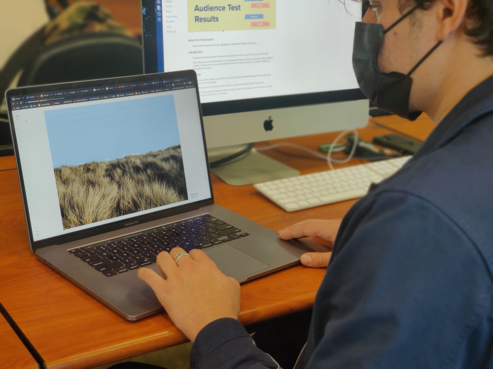
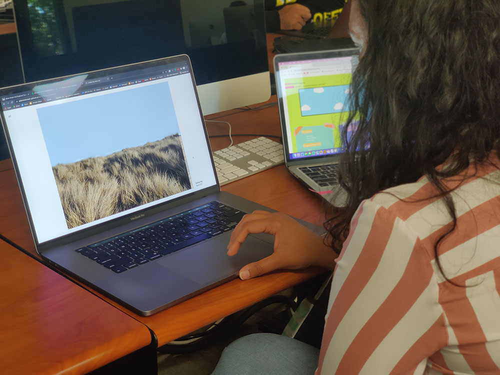

To refine my composition and UI, I had three classmates test my site. Each classmate was asked to look through the photos and explore the site for 2 minutes without my input. I took notes during their testing about what they found, what they missed, where they got stuck, and what they liked. This is a summary of those test results.

Tester 1: Das Liao

Tester 2: Miguel Sedillo

Tester 3: Pratibha Agarwal
User test summary of findings
Firstly, my UI has proved to be quite successful overall. Every tester figured out how to scroll through the photos in the very first second of the test, and they all seemed to really enjoy the concept of the scrolling image reel and the way it would snap each image into place. The testers all liked the amount of information on the page, and all agreed that more buttons with different options would not be necessary.
As for things I needed to improve, two elements rose to the top. First, that the site needs some form of introduction that is automatically shown on entry, and not just hidden in the menu. Secondly, that the site could do more to engage the user, to draw them into the experience and really sell the exhibition as a whole.
Implementing these findings
Overall, these tests have proven that I am close to a finished design, and that just a few changes should bring the project together very well. There are two main things I want to implement in my next iteration. I want to set an introduction to display when the site is loaded to give some context to new users. I also want to add birds that appear on a keypress or a mouse click, as I feel like a little interactive element might just be the last little bit of engagement the site needs. Beyond that, I need to dial in up my animations and positioning, and that should give me a final product I can be proud to publish.